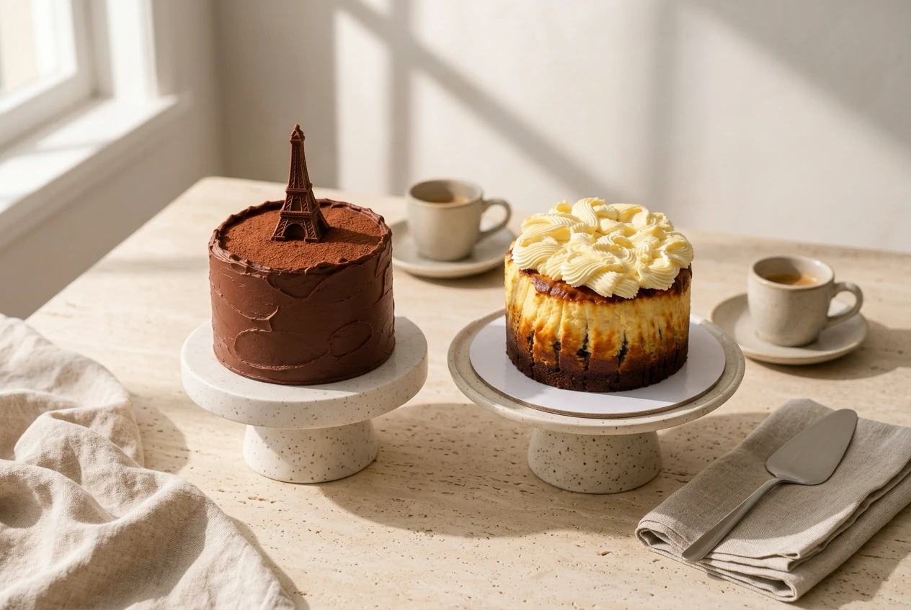
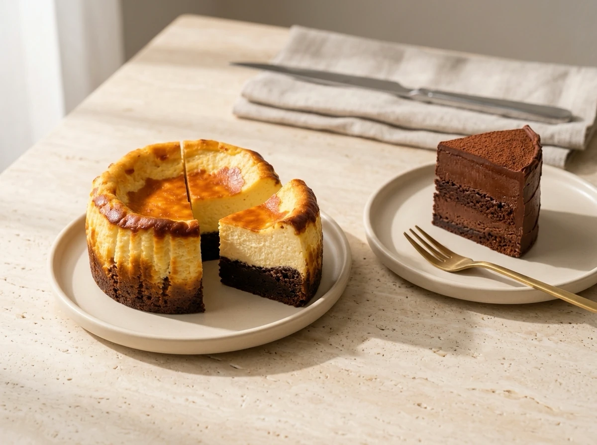
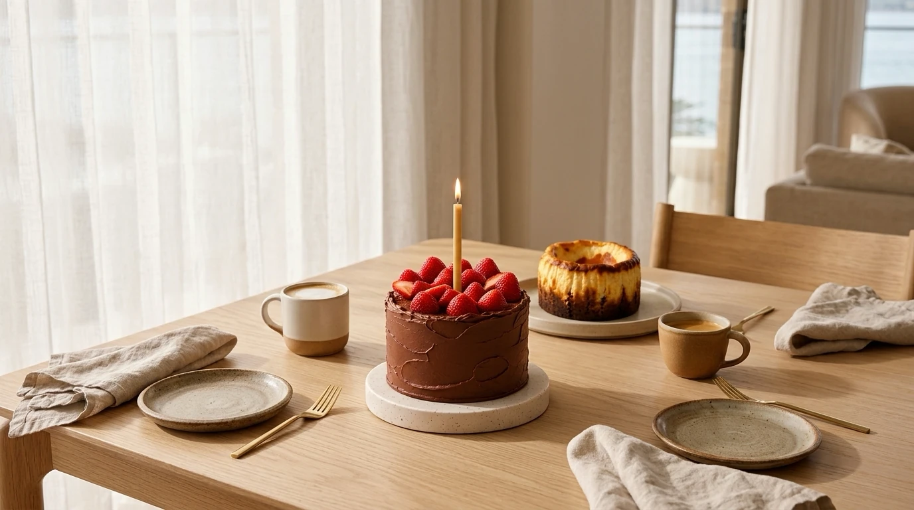

VERYGOOD JOURNAL · CAKE GUIDE · SIZING & MODERN HOSTING
How a petite 10cm whole cake fits date nights, two-to-four-person dinners and the “two-cake” hosting trend — without leftover fridge fatigue.
For years, ordering a birthday or anniversary cake for two to four people in Sydney meant choosing between days of leftover slices crowding an apartment fridge or settling for a single café wedge that never quite felt like a candle moment.
Our Mini 4-inch (approx. 10cm) whole cakes carry the exact same tall patisserie height and couverture craft as our larger 6", 8" and 10" rounds[14][20]—built for intimate tables and the modern “two-cake” dinner party.
KEY TAKEAWAY · ONE MINI FOR 2–4, TWO MINIS FOR 6–8
Available across both our Pavé Chocolate Whole Cake and Brownie Basque Whole Cake, a Mini 4-inch (10cm) cake serves 2–4 cleanly—or order one of each to let 6–8 dinner guests enjoy both signature flavours side by side.

Because our Pavé Chocolate and Brownie Basque cakes are dense, tall patisserie bakes rather than airy low sponges, a 4-inch (approx. 10cm) diameter carries far more presence on the plate than the measurement alone suggests.[15] How you slice it depends on your table:
PORTIONING MATH · THREE WAYS TO SERVE A MINI 4-INCH CAKE
2 GUESTS · DATE NIGHT
Two Evenings, Zero Waste
Slice into four neat quarters: share two slices for your candle celebration tonight, and keep two chilled for tomorrow’s morning coffee.
Real whole-cake ritual for two.
3–4 GUESTS · INTIMATE
Four Café-Height Wedges
Quartering one 10cm cake delivers four tall, generous dessert portions[15][17]—leaving nothing forgotten at the back of the fridge.
Ideal for small family birthdays.
6–8 GUESTS · TWO-CAKE
Pavé + Brownie Basque Duo
For 6–8 guests, cut each Mini into one slim wedge per person so everyone can taste both the dark Pavé and the caramelised Basque.
Solves split dessert preferences.
Around any six-to-eight-person Sydney dinner table, tastes naturally divide: some guests crave silky, intense dark chocolate emulsion,[20] while others prefer creamy, caramelised Basque cheesecake layered over fudgy brownie.[14] Ordering one larger 8-inch cake forces everyone to vote on a single flavour.
Pairing one Mini 4-inch Pavé Whole Cake (Basic or Fresh Strawberries) with one Mini 4-inch Brownie Basque Whole Cake (Basic, Vanilla Fresh Cream, or Cream + Strawberries) turns dessert into a patisserie tasting—while two petite boxes pack cleanly into a cooler bag and a single apartment fridge shelf.[7]

SIZE DECISION · MINI 4-INCH VS. CLASSIC 6", 8" OR 10" ROUNDS
MINI 4-INCH (10CM) · SOLO OR DUO
Intimate Tables & Two-Flavour Hosting
Choose one Mini for 2–4 people, or pair a Pavé Mini + Brownie Basque Mini for 6–8 guests. Effortless apartment-fridge fit, easy BYO carry and zero midweek leftover fatigue.
CLASSIC 6", 8" OR 10" WHOLE CAKE
Single Dramatic Centrepiece for Crowds
Choose a larger single round when 8 to 20+ guests are gathering around one bold birthday centrepiece, milestone candle photo or office morning tea.[15]
Petite whole cakes are wonderfully easy to carry and store, and a few simple patisserie habits keep every wedge looking sharp from Melrose Park pickup to the final bite:
MINI CAKE HOSTING · THREE SIMPLE HABITS
• Slice cleanly in quarters or sixths: Dip a thin sharp knife in hot water and wipe completely dry between cuts so tall ganache and Basque layers stay crisp.[17]
• Keep chilled at 5 °C or below: Carry petite boxes in an insulated cooler bag with ice packs on warm Sydney days and follow FSANZ’s 2-hour / 4-hour food safety rule.[7][24]
• Brief rest for Basic finishes: Letting a Basic Pavé or Brownie Basque Mini sit 10–15 minutes in a cool room softens the ganache slightly—return any leftovers promptly to the fridge.[24]
ALLERGEN & DIETARY REMINDER · FSANZ TRANSPARENCY
Our Pavé Chocolate and Brownie Basque cakes contain dairy, eggs and other common allergens, and are prepared in a kitchen that also handles nuts, wheat and soy. Please check product details or contact our team before ordering for guests with food allergies.[23]

VERYGOOD CHOCOLATE · MELROSE PARK PICKUP · SYDNEY
Explore our Mini 4-inch (approx. 10cm) Pavé Whole Cakes and Brownie Basque Whole Cakes — made to order for pre-arranged pickup in Melrose Park, Sydney, whether you are celebrating with two people or styling a two-cake dinner table.
[7] https://www.foodstandards.gov.au/business/food-safety/transporting-food-safely — FSANZ — Transporting food safely
[14] https://www.kingarthurbaking.com/recipes/basque-cheesecake-tarta-de-queso-recipe — King Arthur Baking — Basque Cheesecake (Tarta de Queso)
[15] https://www.cakefromtheheart.com.au/cake-sizing.html — Cake from the Heart (Australia) — Cake Sizing Guide
[17] https://www.lamanna.com.au/cake-cutting-guide — LaManna Patisserie (Australia) — Cake Cutting Guide
[20] https://www.valrhona.com/en/l-ecole-valrhona/discover-l-ecole-valrhona/chocolate-terminology/chocolate-emulsion — Valrhona — Chocolate emulsion
[23] https://www.foodstandards.gov.au/consumer/labelling/allergen-labelling — FSANZ — Allergen labelling for consumers
[24] https://www.foodstandards.gov.au/business/food-safety/2-hour-4-hour-rule — FSANZ — 2-hour / 4-hour rule